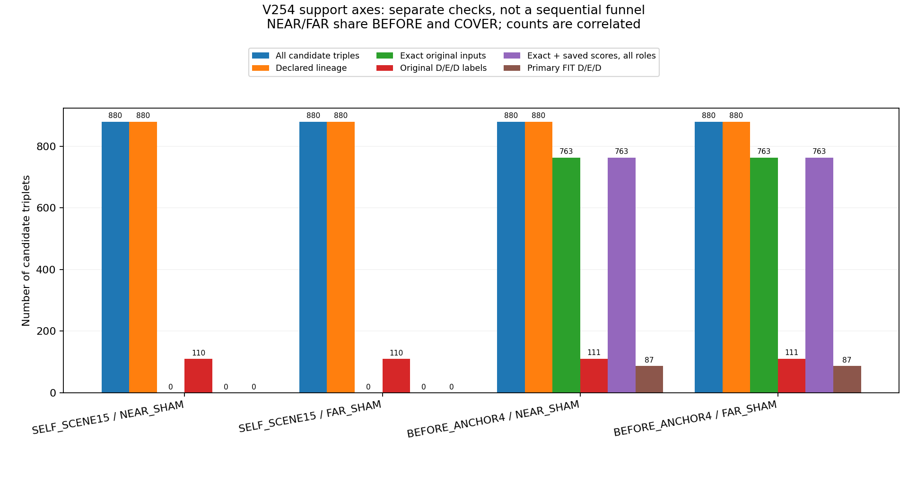
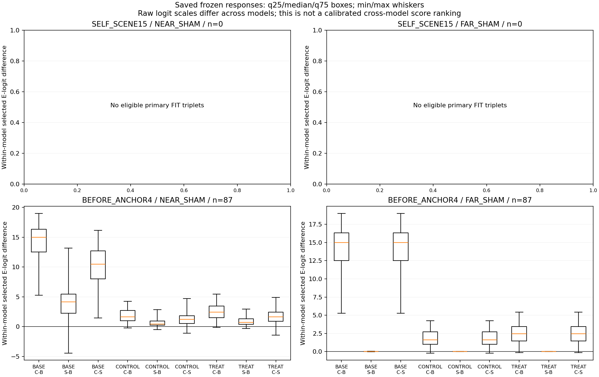
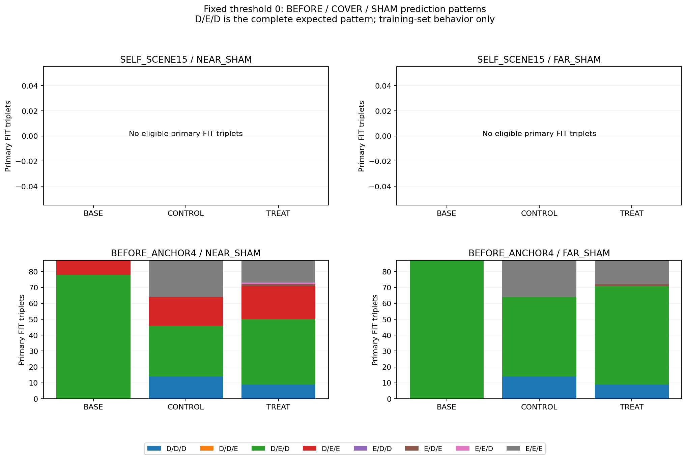

좌표를 완전히 고정한 BEFORE-anchor FIT에서 최신 대상 참조 TREAT의 완전 D/E/D 정답은 가까운 SHAM 41/87, 먼 SHAM 62/87입니다. 기존 BASE는 각각 78/87, 87/87입니다. TREAT도 COVER 점수를 SHAM보다 높이는 방향은 각각 83/87, 84/87에서 맞았습니다. 따라서 가림 조작에 전혀 반응하지 않는다는 설명은 맞지 않지만, 보임까지 함께 지키는 최종 판정은 부족합니다. 이 자료에서 참조 모델이 BASE보다 개선됐다는 근거는 없습니다. 원 native 주소6·7은 이 strict FIT 대조에 적격 사례가0개이므로 모든8개 부위의 가림 반응을 검증한 결과로 볼 수 없습니다.
첨부 V241은 V240까지의 검토입니다. 이후 분기·참조·생성 쌍 관련 진단과 학습이 추가됐으므로, 문서의 미실행 목록을 현재 상태처럼 다시 쓰지 않습니다. 이번 V254는 새 모델을 학습하지 않고 기존 V129의 전체 장면 가림 대조와 V252 세 모델의 저장 점수를 연결해 행동을 확인한 결과입니다.
원 Source 15,040행과 1,767개 입력 그룹을 먼저 검산했습니다. 모든 그룹의 원 8개 slot을 확인했고, 별칭 행을 제거하지 않았습니다. SYN 7,040행의 masked 944행과 전체 masked 7,423행은 E나 성공 보류로 바꾸지 않았습니다. 후보 triplet 3,520개를 누락·입력 불일치·라벨 상태와 함께 보존했습니다.
SELF_SCENE15는 각 장면 자체의 초기 추론 좌표를 사용하고, BEFORE_ANCHOR4는 원 BEFORE 초기 좌표를 다른 variant에도 유지합니다. 두 가족을 섞지 않았습니다. q/L·가용성뿐 아니라 원 q8/L8/availability8·box·known condition32의 정확한 일치를 요구했습니다. 좌표를 보정하거나 근처 사례로 대체하지 않았습니다.
표의 primary는 모든 구성원이 FIT이며, 원 정답이 BEFORE D·COVER E·SHAM D이고, 선언된 대상 관계·원 입력·저장 점수 가용성을 모두 만족한 경우입니다. 실제 판정 D/E/D와 COVER−SHAM 점수 양의 비율을 각각 표시합니다. 방향만 맞아도 원 보임과 대조 보임을 함께 맞힌 것은 아닙니다. NEAR와 FAR는 BEFORE/COVER를 공유하므로 두 수를 독립 사건으로 더하지 않습니다.
합성 정답은 선택된 native record의 첫 witness에 대한 상태입니다. 전체 대상 팔레트가 단독으로 보일 때와 foreign BOX가 앞을 막을 때를 구분하며, 자기 기하가 가린 S는 E에 합치지 않습니다. 이 검사는 q 한 픽셀의 소유자·부위 전체 가시성·실사 팔레트의 사람 정답을 새로 증명하지 않습니다. 공개 YCB의 associated-r 보조 정답도 이번 합성 triplet 성능에 합치지 않았습니다.
이는 학습에 쓰인 Source FIT 장면에서의 저장 행동 진단입니다. 성능 개선 실험이나 독립 일반화 검증이 아니며, 최신 모델을 채택하거나 현재 평가에 진입한 결과도 아닙니다. 세 모델의 raw logit 크기는 서로 보정된 확률이 아니므로, 크기 차이만으로 모델 순위를 정하지 않습니다.
새 학습·모델/encoder/체크포인트 forward·RGB/원 GT 해독·bank 적합·문턱 선택·PnP는 없습니다. 여섯 Source 컨테이너 전체를 읽고 hash했으므로 DEV 메타데이터와 저장 출력도 포함됩니다. 이는 고정 census와 진단용이며 새 설정 선택에 사용하지 않았습니다. 사용자가 첨부한 검토문 전체 바이트는 읽고 hash했지만, 그 안의 과거 현재/held 평가 집계를 새 선택 근거로 사용하지 않았습니다.
| 원 입력 가족 | SHAM | 전체 후보 | 선언 관계 | 입력 exact | 원 D/E/D | exact+점수(모든 분할) | primary FIT |
|---|---|---|---|---|---|---|---|
| SELF_SCENE15 | NEAR_SHAM | 880 | 880 | 0 | 110 | 0 | 0 |
| SELF_SCENE15 | FAR_SHAM | 880 | 880 | 0 | 110 | 0 | 0 |
| BEFORE_ANCHOR4 | NEAR_SHAM | 880 | 880 | 763 | 111 | 763 | 87 |
| BEFORE_ANCHOR4 | FAR_SHAM | 880 | 880 | 763 | 111 | 763 | 87 |
| 원 입력 가족 | SHAM | 모델 | FIT n | 예측 D/E/D | COVER>SHAM | median C−B | median S−B | median C−S |
|---|---|---|---|---|---|---|---|---|
| SELF_SCENE15 | NEAR_SHAM | BASE | 0 | NA | NA | NA | NA | NA |
| SELF_SCENE15 | NEAR_SHAM | CONTROL | 0 | NA | NA | NA | NA | NA |
| SELF_SCENE15 | NEAR_SHAM | TREAT | 0 | NA | NA | NA | NA | NA |
| SELF_SCENE15 | FAR_SHAM | BASE | 0 | NA | NA | NA | NA | NA |
| SELF_SCENE15 | FAR_SHAM | CONTROL | 0 | NA | NA | NA | NA | NA |
| SELF_SCENE15 | FAR_SHAM | TREAT | 0 | NA | NA | NA | NA | NA |
| BEFORE_ANCHOR4 | NEAR_SHAM | BASE | 87 | 78/87 (89.7%) | 87/87 (100.0%) | 15.0072 | 4.1670 | 10.4984 |
| BEFORE_ANCHOR4 | NEAR_SHAM | CONTROL | 87 | 32/87 (36.8%) | 83/87 (95.4%) | 1.6271 | 0.4414 | 1.2209 |
| BEFORE_ANCHOR4 | NEAR_SHAM | TREAT | 87 | 41/87 (47.1%) | 83/87 (95.4%) | 2.4419 | 0.6976 | 1.6520 |
| BEFORE_ANCHOR4 | FAR_SHAM | BASE | 87 | 87/87 (100.0%) | 87/87 (100.0%) | 15.0072 | 0.0000 | 15.0021 |
| BEFORE_ANCHOR4 | FAR_SHAM | CONTROL | 87 | 50/87 (57.5%) | 85/87 (97.7%) | 1.6271 | 0.0000 | 1.6271 |
| BEFORE_ANCHOR4 | FAR_SHAM | TREAT | 87 | 62/87 (71.3%) | 84/87 (96.6%) | 2.4419 | 0.0000 | 2.4419 |
| 원 native 주소 | NEAR n | FAR n | BASE NEAR 정답 | BASE FAR 정답 | TREAT NEAR 정답 | TREAT FAR 정답 |
|---|---|---|---|---|---|---|
| 0 | 23 | 23 | 21 | 23 | 15 | 17 |
| 1 | 24 | 24 | 23 | 24 | 5 | 12 |
| 2 | 10 | 10 | 9 | 10 | 5 | 7 |
| 3 | 10 | 10 | 8 | 10 | 5 | 7 |
| 4 | 10 | 10 | 10 | 10 | 6 | 9 |
| 5 | 10 | 10 | 7 | 10 | 5 | 10 |
| 6 | 0 | 0 | 0 | 0 | 0 | 0 |
| 7 | 0 | 0 | 0 | 0 | 0 | 0 |


